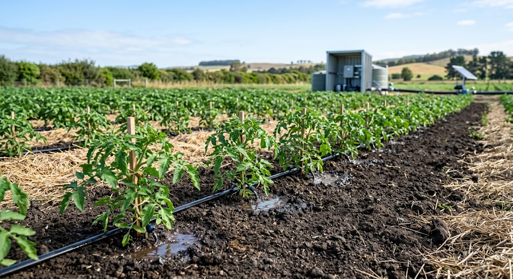
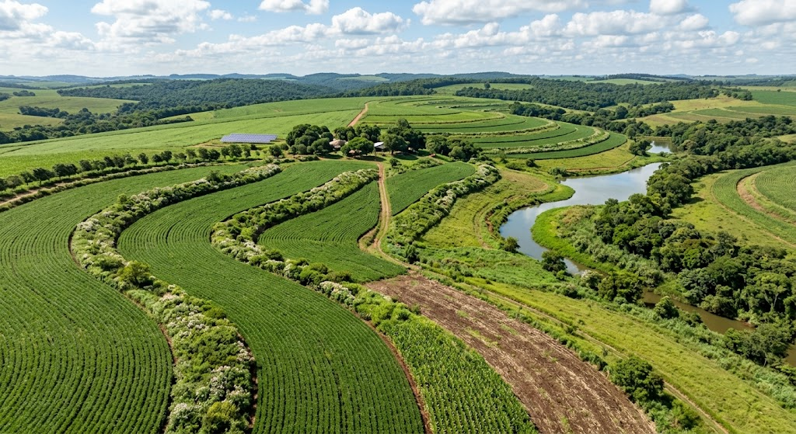

01
Agricultura Sustentável
Formas de produzir utilizando os recursos naturais de maneira responsável.
AGRONEGÓCIO • SUSTENTABILIDADE • FUTURO
Descubra como o agronegócio pode crescer utilizando tecnologia, planejamento e práticas que respeitam o meio ambiente.
O agronegócio é formado por diversas atividades relacionadas à produção agropecuária, desde os insumos utilizados no campo até o processamento, transporte e comercialização dos produtos.
Quando falamos em agronegócio sustentável, buscamos encontrar um equilíbrio entre produção, economia, sociedade e meio ambiente.
Isso significa produzir alimentos e matérias-primas sem comprometer os recursos necessários para as próximas gerações.
Sustentabilidade não significa parar de produzir. Significa aprender a produzir de maneira mais inteligente e responsável.
Mais eficiência no campo.
Proteção dos recursos naturais.
Dados para decisões melhores.
Produção para as próximas gerações.
Clique nos cartões para descobrir mais sobre cada assunto.
Formas de produzir utilizando os recursos naturais de maneira responsável.

A importância da água e maneiras de diminuir desperdícios na produção.

Práticas para diminuir erosões e manter a qualidade do solo.

Como agricultura e conservação da natureza podem coexistir.

Fontes de energia que podem reduzir impactos ambientais no campo.

Drones, sensores, GPS e dados transformando a agricultura.
A tecnologia permite coletar informações sobre plantações, clima, solo e utilização de recursos.
Mantém a qualidade e a capacidade produtiva.
Reduz desperdícios e melhora a eficiência.
Favorece a conservação dos ecossistemas.
Melhor utilização dos recursos pode reduzir custos.
Utilize as ferramentas abaixo para fazer estimativas relacionadas à produção agrícola e ao uso da água.
Clique no botão para conhecer uma informação sobre sustentabilidade no agronegócio.
O conteúdo foi elaborado com apoio de fontes institucionais e científicas.
Pesquisas e informações sobre agricultura, sustentabilidade, solos, água e tecnologia.
Informações oficiais sobre agricultura, pecuária e políticas públicas.
Dados e estatísticas sobre agricultura, território e meio ambiente.
Referência internacional para sustentabilidade, água, energia, produção e conservação.